|
|
|
For an easier understanding of the notion of processual object, we shall analyze the existence of such objects, by taking as an example the well-known case of the motion processes. After reading this annex, the reader will be able to understand that the processual objects can exist within any other processes, regardless of the variable attribute and regardless of the distribution support which defines this process.
The translation motion of a MS is a specific process, a variation of an attribute - the spatial position vector 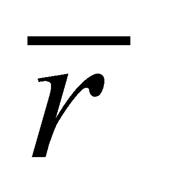- of an internal reference T of MS, in relation to an external reference. The objectual-processual analysis of the motion processes reveals the possible existence of many types of specific elementary processes (SEP, type P0, P1, P2 etc.) and of more state types of these motion SEP (S0, S1, S2 etc). All the state-type objects which are in question, may be considered as elements of some distributions (with a temporal support, applicable in case of the motion); the states S0 are elements belonging to a primary distribution, the states S1, S2, S3 are elements of the derived distributions belonging to the first, second and third rank of the primary distribution. In chapter 5, we have seen that the primary temporal distribution of the spatial positions of a moving MS is a Lagrange distribution (a trajectory):
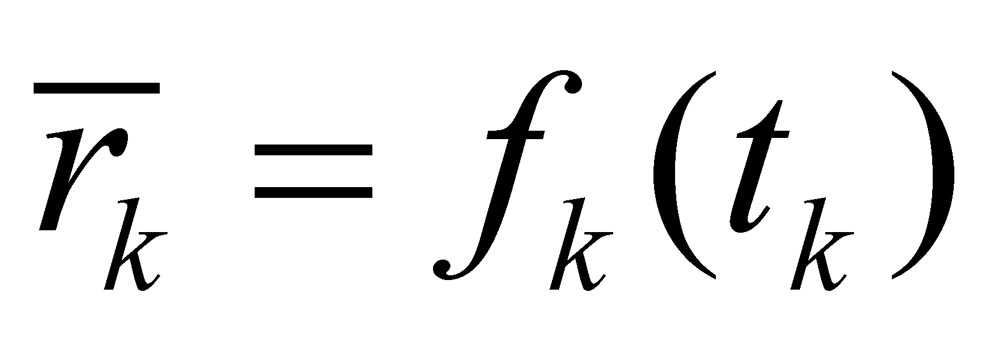 (X.6.1)
This kind of realizable trajectory (obtained as a result of a sampling process) is displayed in the figure X.6.1, by means of a simple case with only five elements within a 2D space:
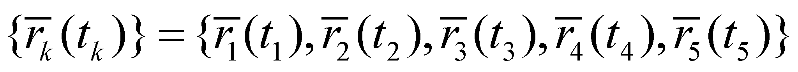 (X.6.2)
which are enough in order to explain the composition of the derived distributions up to the third rank.
Fig. X.6.1
The elements of this kind of distribution are states belonging to the class S0 with null specific processes (P0), each element having (in case of a realizable distribution), a temporal DP (a normal value placed on the time axis) as its support.
Therefore, the moments t1 …t5 are temporal DP which were subjected to samplings of the spatial positions of the moving MS, moments which comply with the following condition: the values tk (k=[1,5]) are internal references (extreme right98) of some specific temporal DP with amount ε, placed at equal intervals Δt (therefore, the finite temporal differences with a rank major than one are considered null).
The motion is assumed to be so uneven so that there are finite differences of the position vector up to the third rank (for allowing the processes existence up to this rank). In case of the motion existence, the state condition S0 requires that the amount of the temporal support DP (duration of a sample) to be low enough so that the motion process to be considered insignificant (namely, a null one).
A first rank motion SEP (P1) consists of a linear and finite variation of position 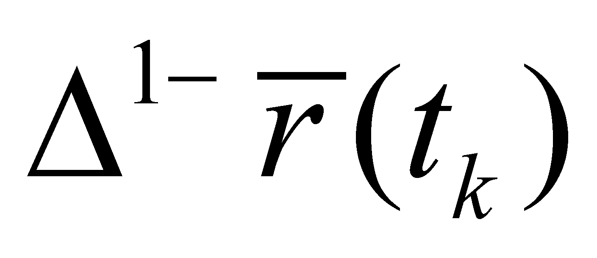, distributed on a support domain Δt (between two S0-type states, see the figure X.6.1).
Comment X.6.1: We are reminding the reader that the symbol 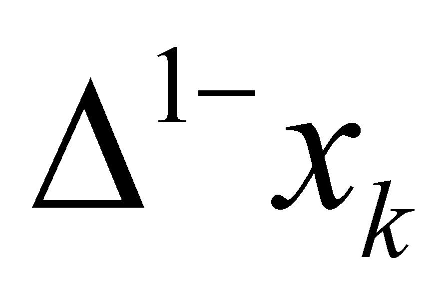 or 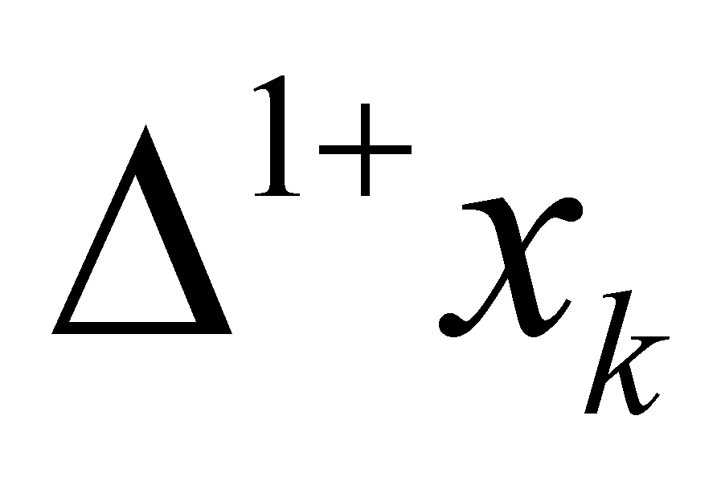represents a right (anterior) finite difference, respectively left (posterior) against the reference element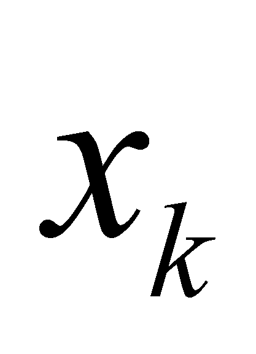 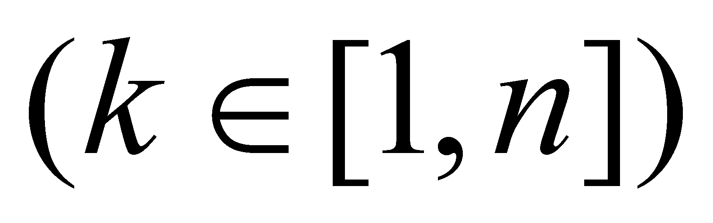from an ordered set of n singular values of the variable x. In case of a first rank finite difference, we shall have:
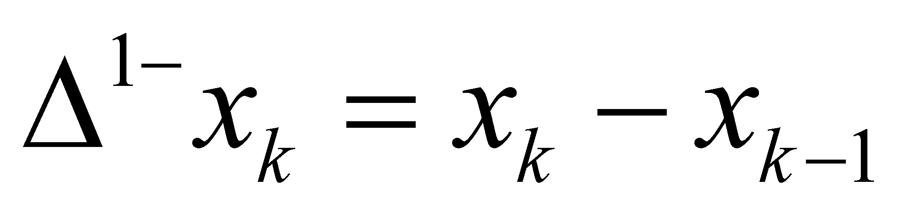 (X.6.3)
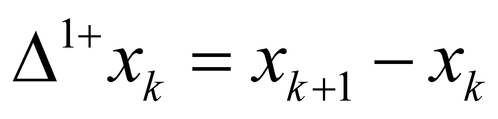 (X.6.4)
The reason for using this kind of notation, with the reversed position of the sign, was chosen for avoiding the confusion between the rank of a finite difference and an exponent (a power).
The amount of the interval Δt (sampling period) is selected so that a position variation to be possible, but this variation must be considered linear (with an even density). S1-type state (temporal density of the position’s linear variation, that is the velocity) of the first rank SEP, which is evenly distributed on the support interval Δt is:
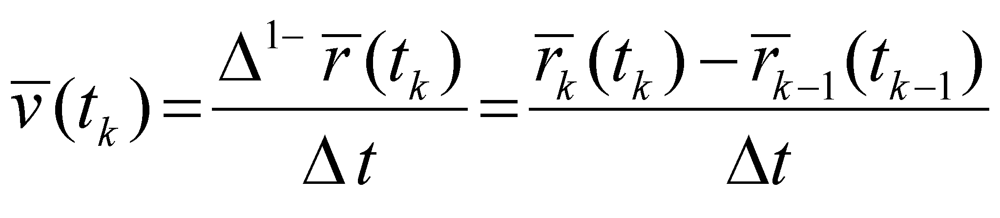 (X.6.5)
namely, the density of a first rank distribution element:
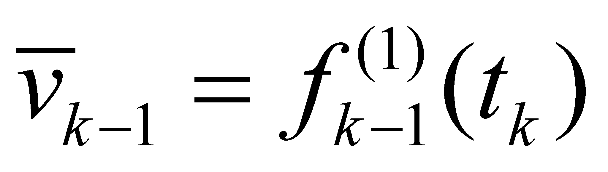 (X.6.6)
of the primary distribution X.6.2.
Comment X.6.2: One may notice that there is a ratio between a vector quantity (the first rank difference of two vectors) and a scalar (a temporal interval), resulting that the density of that distribution is a vector quantity. The reader is invited to accept that the distributions density values are scalars only as regards the primary distributions, where the distributed attribute is also scalar, and if the distributed attribute is a vector quantity (a process, that is the case of the derived distributions), then, the density shall be a vector as well. In case of an invariant vector density (on its support domain), this aspect implies the simultaneous invariance of the modulus and of its direction.
The figure X.6.2 shows the evolution of the information99 regarding the position vector modulus throughout time, in order to clearly emphasize what are the support intervals of the two types of states S0 and S1. We have settled that within the sampling intervals with amount (amount of a DP), the position vector remains invariant, and within the interval which is associated to the sampling period (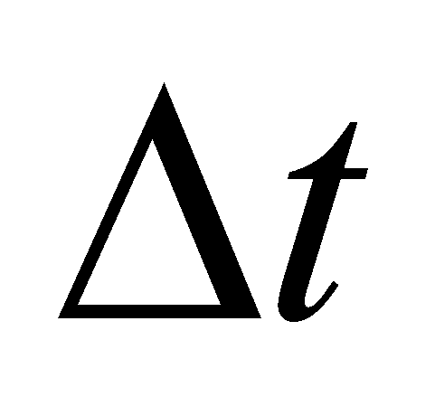), the position vector is linear variable. Taking into account the figure X.6.2, it may be noticed that the motion’s support interval is 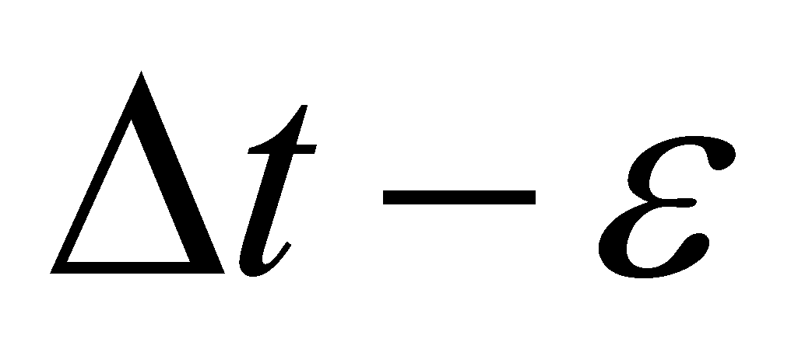 and not Δt, just as the relations X.6.5 and X.6.7 indicate, because the motion is null on the interval (invariant position through the definition of the state S0). Because we did not want to make things too complicated, we stopped mentioning ε in the relations X.6.5 and X.6.7., but the reader must consider these notes in order to clearly understand that the temporal support of the state 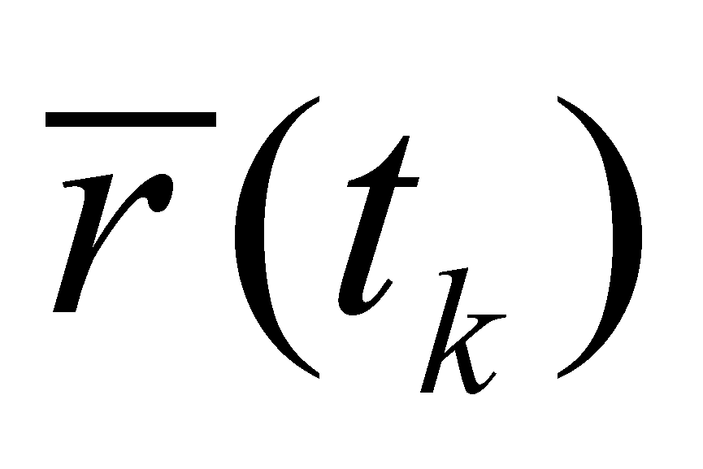 (state S0) is different from the support of the state 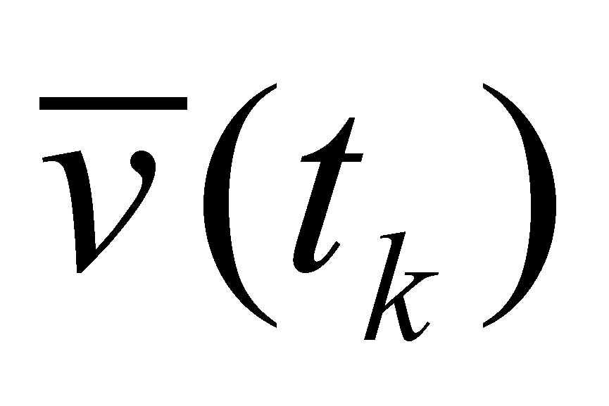 (state S1), the two temporal intervals being adjacent but disjoint.
Fig. X.6.2
Although the temporal reference of both objects is the same value tk, in case of the state S0, it is an internal reference included in the support interval, whereas as regards the state S1, it is an asymptotic reference (it is adjacent, but it does not belong to the support interval). Mathematically speaking, by using the notation for the closed or open intervals, the support interval of the state is 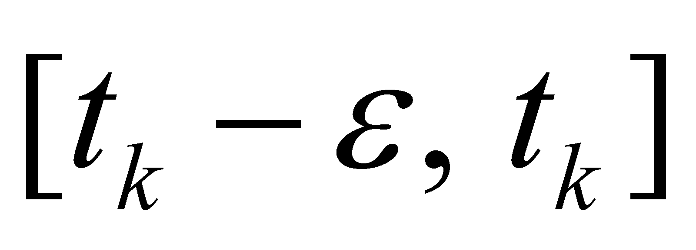, whereas the support interval of the state is 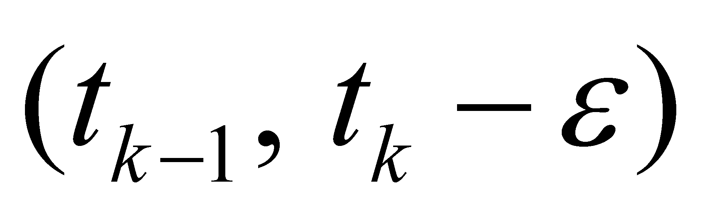. According to the figure X.6.2, it clearly results that the position and the velocity of a material object cannot have a simultaneous existence, although both abstract objects have the same reference value tk.
As for the second rank motion SEP, the S2-type state (temporal density of the velocity’s even variation, that is the acceleration) which is evenly distributed on the support interval Δt is:
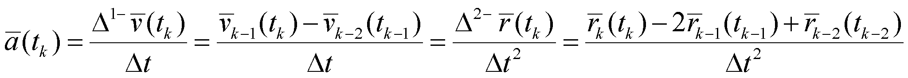 (X.6.7)
that is the density of a second rank derived distribution element:
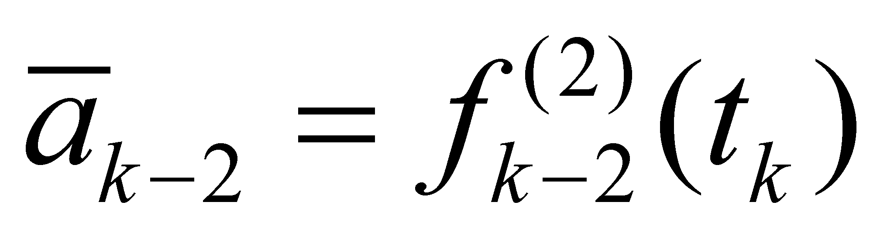 (X.6.8)
In the actual case of the primary distribution X.6.2, the second rank derived distribution shall be:
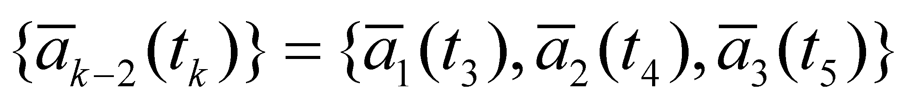 (X.6.9)
The figure X.6.3 shows the distribution X.6.7 (only the velocity modules), which displays both the velocity modules and the modules of the velocity variations 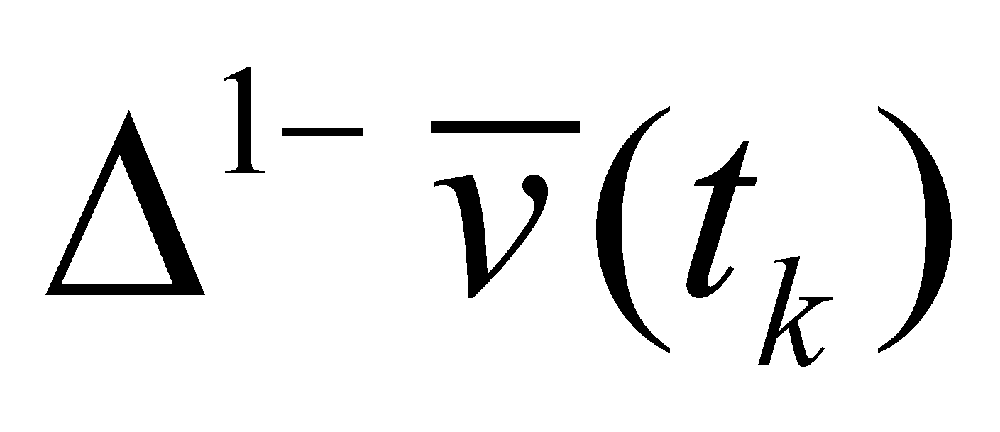. This graphical plotting (as well as the ones from the figure X.6.1 or X.6.2) must be understood with all its shades. The temporal distribution of the information on the velocity which is provided to us as a result of the sampling process is displayed through a thickened line, not the real velocity of the motion process which is under study, but this fragmentary information is the only one we are able to get and the only one with which we can operate to during the information processing process.
Fig. X.6.3
Comment X.6.3: The reader must understand and make a distinction between a real motion process and an information about that process. As regards an object or process which are located outside our body, we can have only partial informations provided by our sensory organs and by other auxiliary means, but not the total information about that object or process, information which is infinite in terms of quantity. Both the position and the velocity or acceleration of a moving object are the only data which are categorized by us in order to be able to differentiate (distinguish) them one from another, and these informations are our only link between our brain and the outside world. When we are saying that the position and velocity cannot have a simultaneous existence, we are referring mostly to the information about position and to the information about velocity. But even as a result of the idealization of the partial information (by decreasing the support intervals and to zero), we cannot let aside the principle of non-contradiction (see the annex X.5) which forbids that the same attribute to be constant and non-constant (variable) in the same time interval.
According to the figure X.6.3, we may notice that the information about the velocity variation occurs with a delay of a sampling period, but this variation may be found (is distributed) along the same period of velocity existence, that is also on an interval .
As for the third rank motion SEP, the S3-type state (temporal density of the even acceleration variation) distributed on a support interval is:
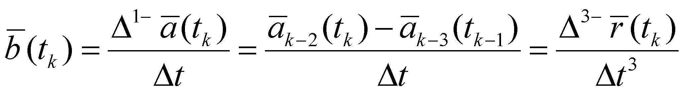 (X.6.10)
that is the density of an element of third rank derived distribution:
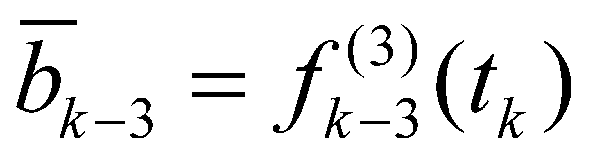 (X.6.11)
of the primary distribution X.6.1.
Fig. X.6.4
According to the figure X.6.4 in which the distribution of the acceleration modulus is being displayed (modules of the distribution X.6.11), we may notice that the information about the acceleration variation occurs with a delay of two sampling periods.
Comment X.6.4: The processual states S1, S2 and S3 about which we have discussed so far, reaching to the conclusion that they are objects (obviously, abstract ones), because these are invariant distributions on their support domains and besides they are objects, they are also complex objects. According to their definition relations X.6.5, X.6.7 and X.6.10, it may be noticed that a state S1 is based (in its composition) on a relation between two states S0, a state S2 consists of two states S1 or three states S0, so on. All these components of a state are abstract objects, which at the moment of assessment are considered as operands of an abstract process (computing, information processing), performed by an IPS; but, as we saw in the chapter 8, the operands of a specific abstract process must all have a simultaneous existence, whereas the states which they stand for, are no longer available at that specific moment (but they were existent at the previous moments). Due to this reason, all the information regarding the previous states which are perceived by IPS must be stored, and the storage takes place into a basic component of an IPS - its memory. In chapter 8, we have also read (the memory’s axiom) that only objects can be stored into a memory (invariant and finite information amounts). This is the reason why the systemic philosophy has chosen an objectual approach on the cognition, approach which in some cases is far more different from the currently existing approach, but which is based on the fact that the cognition cannot be separated from the abstract processes deployed into the human mind or into AIPS, and these processes cannot be understood without an accurate and general model of IPS, model which explains us what the information processing actually means.
In order to allow the reader to make a clear picture on the essence of the motion’s objectual approach, let us imagine that the process which we have analyzed it is an extremely simple motion picture made-up only from five shots, in which a point from the screen (the internal reference T of the moving object) performs the motion from the position 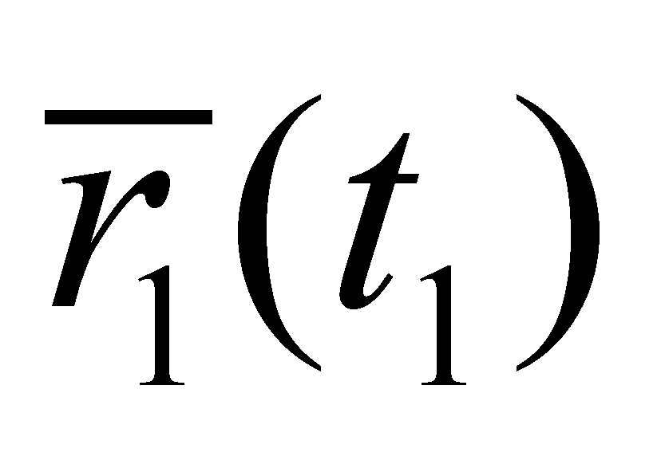 to 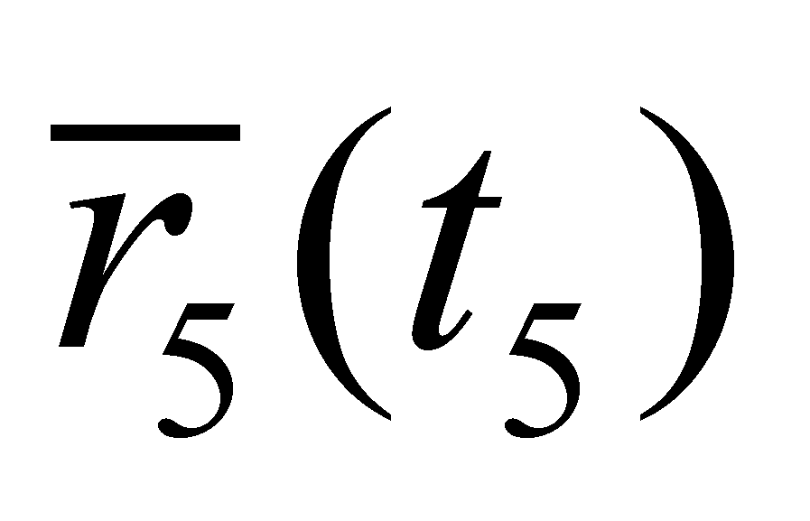. Each shot is associated to a state S0 of the point object (in any movie, a shot is a state of all the objects which are caught on camera, all of them are motionless because they were recorded (stored), the shot being related to temporal interval ε as its support (which during the recording session corresponds to the exposure time and during playing, is related to the lighting time of that shot). There is a finite interval (several temporal DP) between two shots, which is high enough so that at a certain speed of the motion process, it will allow the occurrence of different detectable positions of objects.
This interval Δt is the temporal support of the even process P1 and its density (invariant on this interval) is the constant motion speed (which is assumed to be constant only in this interval), that is a state S1. In case of a movie, this interval is used when the motion picture moves forward with one frame (that is a motion process which substitutes the motion of the filmed object). Because the human brain works similarly (by means of sampling and storage too), it is very easy for it to “synthesize”, to reconstitute the motion from the frames (samples) which were played, just as if this motion would be continuous. Finally, the usual remarks:
The objects S0 with null specific processes (P0) exist (for an IPS) during their support interval, that is a temporal DP (in case of the motion processes, but if the object does not move, the state S0 can last endlessly). The processes P1 are also deployed on the duration of their temporal support, that is a set of concatenated DP which make-up a first rank finite interval, with such an amount so that the process could be considered as uneven. The two temporal domains (a DP for the object S0 and a DP set for the object S1) are different, therefore, the objects S0 and S1 do not have a simultaneous existence. The same attribute - spatial position - cannot be invariant (P0) and variable (P1) at the same time. The two abstract objects - one which is a state of an object (S0) and the other, a state of a process (S1) - have different support domains, therefore, they cannot exist at the same determined moment, position and speed.
The objectual approach which is specific to this paper, based on distributions, reveals in this way a fundamental error of the classic physics - that is the acceptance of the simultaneous existence of the position and impulse (velocity) of a MS. This error comes from another error which this time may be found in the mathematics field - the derivative existence in one singular point - same type of error which may be also noticed if we shall review the notion of derivative, by taking into account the concepts which are specific to the objectual philosophy (see the annex X.3).
The definition of the specific elementary processes (SEP) as distributions with even density of some variations (first rank finite differences between two states Sx) allows on the one hand an analysis of the processes, regardless their complexity, by decomposing them into various ranks SEP, and on the other hand, a better understanding of the operations with the abstract objects which are a substitute for SEP - vectors.
The classes of processual objects include abstract processes which are defined by means of elementary processes (namely, only through even processes). In case of the real objects, which are subjected to the real processes, these classes of processual objects (available only in the memory of an IPS) are always associated with a temporal interval as its model attribute, which may be considered as a “history” of that object. The exclusive utilization of the even processes as elementary processes is due to their property which does not allow them to contain internal differential information (the variation density is even into the support temporal interval, therefore, there are no internal contrast elements of the density).
98 In case of the temporal intervals, we must choose the extreme right reference because IPS are able to receive information about the real processes only for the present moment (the reference against which the comparison is made) and the previous moments (which are already stored into memory and placed in the left side of the time axis). We are politely asking the ones who do not agree the extreme right to accept our apologies, but in case of the processes deployed in real time, there is no other alternative (#).
99 Information which is provided to us by means of the sampling process, the only possible way to find out the evolution of a real process.
Copyright © 2006-2011 Aurel Rusu. All rights reserved.